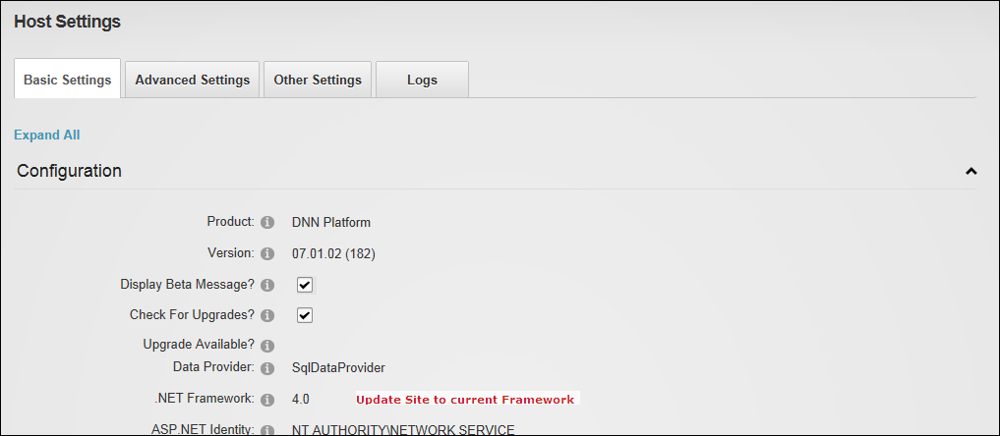

Updating Site to Current .NET Framework
How to update your DNN installation to the current .NET Framework. This updates the Web.config file with the .NET 3.5 Framework. This framework may be required for some custom modules.
- Navigate to Host >
 Host Settings.
Host Settings.
- Select the Basic Settings tab.
- Expand the Configuration section.
- At .NET Framework, the current framework details are displayed. If a more recent version is available the Update Site to current Framework link is displayed.
- Click the Update Site to current Framework link.

Updating Site to Current Framework